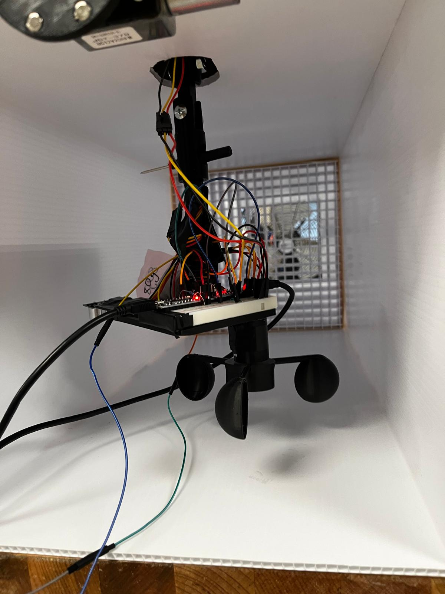

Underwater Coral Monitoring Station
| Sensors | temperature, pH, turbidity |
|---|---|
| Data | MCU logging, sent wirelessly |
| Housing | 3D-printed, waterproof |
A prototype station for monitoring coral reef health, with environmental sensors packed into a waterproof, 3D-printed housing.

What I built
- Integrated temperature, pH and turbidity sensors into a waterproof, 3D-printed housing.
- Microcontroller-based data logging and wireless communication for real-time monitoring.
- Documentation and test reports, aligning design decisions with sustainability and ecological research goals.
Tools & tech
MicrocontrollerSensors3D printing